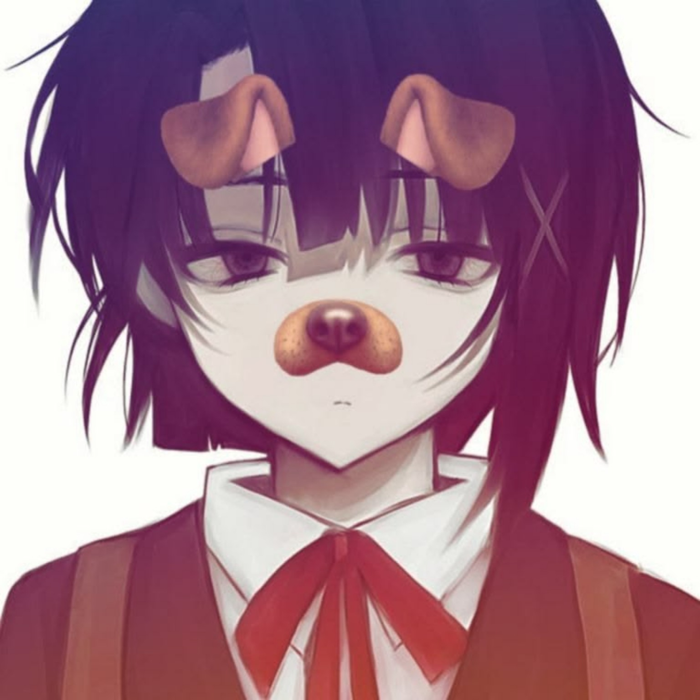

01WEB APP
Sistem Aspirasi Sekolah
Sistem pengaduan dan aspirasi siswa dengan autentikasi, kategori laporan, status proses, serta dashboard admin.
PHP NativeMySQLHTMLCSSJS

@rr4sz._
Membangun tampilan yang terlihat sederhana dan terasa nyaman digunakan.
Saya Rasyaa — developer yang percaya bahwa website yang baik lahir dari struktur yang rapi, desain yang bersih, dan logika yang jelas. Fokus saya pada frontend development, membangun antarmuka responsif dengan HTML, CSS, dan JavaScript tanpa ketergantungan framework.
RASYAA — PERSONAL WEB 2026
Tanpa framework, tanpa shortcut. Hanya fondasi yang kokoh, desain yang jelas, dan website yang benar-benar bekerja.
SELECTED WORK
Proyek kecil sampai sistem yang lebih kompleks. Setiap proyek jadi tempat buat menguji logika, memperbaiki struktur, dan belajar dari bug yang kadang muncul tanpa diundang.
Sistem pengaduan dan aspirasi siswa dengan autentikasi, kategori laporan, status proses, serta dashboard admin.
Website personal minimalis yang fokus pada identitas, kemampuan, proyek, dan pengalaman pengguna yang ringan.
Eksplorasi sistem data sekolah dengan role-based access untuk siswa, guru, admin, dan pengelolaan nilai.
TOOLKIT & KEAHLIAN
Saya memulai dengan belajar secara mandiri dan konsisten membangun proyek nyata. Kekuatan utama saya ada pada frontend, struktur halaman, responsivitas, dan pengalaman pengguna yang tetap ringan.
Struktur semantik dan fondasi halaman yang rapi.
Layout responsif dengan Flexbox, Grid, dan desain modern.
DOM, event handling, validasi, dan vanilla ES6+.
Logic backend, session, CRUD, autentikasi, dan integrasi database.
Relasi tabel, query, dan pengelolaan data aplikasi.
Hierarki visual, spacing, typography, dan alur yang mudah dipahami.
CARA SAYA BEKERJA
Memecah kebutuhan menjadi bagian kecil sebelum mulai ngoding.
Struktur HTML, database, dan logic dibuat rapi sejak awal.
Responsif, spacing, interaksi, lalu memastikan semuanya tetap ringan.
TEMUKAN SAYA
Tempat lain buat nemuin gue di internet.
Project, collaboration, atau sekadar ngobrol soal web development.
CONTACT